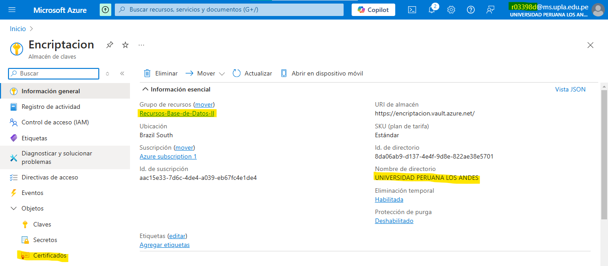

Encriptación de Campos en Base de Datos en Microsoft Azure
Aquí vamos a ver cómo encriptar campos específicos dentro de una base de datos SQL en Azure. Esto es útil para proteger datos sensibles como contraseñas, tarjetas de crédito o cualquier tipo de información privada que no queramos que esté accesible sin protección.
La encriptación no solo es clave para la seguridad, sino que también es una forma de asegurarse de cumplir con normativas como GDPR, HIPAA o PCI DSS. A continuación, te cuento cómo hacerlo paso a paso en Azure.
Requisitos Previos
Asegúrate de tener lo siguiente listo antes de empezar:
- Acceso a una base de datos SQL en Microsoft Azure. Necesitas tener permisos de administrador para poder hacer estos cambios.
- Acceso a Azure Key Vault. Este servicio se usa para crear y manejar las claves de encriptación.
- Conocimiento básico de SQL Server Management Studio (SSMS) o Azure Data Studio. Estas herramientas son las que vas a usar para aplicar la encriptación a las columnas de la base de datos.
Pasos para Encriptar Campos
1. Preparar el Entorno
Primero, asegúrate de que tienes acceso a tu base de datos SQL en Azure. Solo tienes que iniciar sesión en el portal de Azure y entrar al recurso de base de datos SQL donde vas a aplicar la encriptación.
Tip: Si no tienes acceso, avísale al admin para que te dé los permisos necesarios.
2. Crear la Base de Datos "Ejemplo-encriptación"
Ahora vamos a crear una base de datos para probar la encriptación. Lo haremos directamente en el portal de Azure. Sigue estos pasos:
1. Entra al portal de Azure y ve a la sección de SQL Databases.
2. Haz clic en Crear y selecciona Base de datos SQL.
3. Asigna el nombre "Ejemplo-encriptación" a la base de datos.
4. Configura la base de datos con los parámetros que necesites, como el servidor SQL y las credenciales de acceso.
5. Haz clic en Revisar + Crear y luego en Crear para que se cree la base de datos.
3. Crear Tablas en la Base de Datos
Ahora que tenemos la base de datos, vamos a crear una tabla para almacenar datos en ella. Para ello, nos dirigimos al Editor de Consultas dentro del portal de Azure.
1. Accede al portal de Azure y entra en la base de datos que creaste (Ejemplo-encriptación).

2. Ve a la sección Editor de Consultas y abre una nueva consulta.
3. Crea una tabla usando el siguiente script:
CREATE TABLE Clientes (
ClienteID INT PRIMARY KEY,
Nombre NVARCHAR(100),
Email NVARCHAR(100),
TarjetaCredito NVARCHAR(16)
);4. Ejecuta la consulta para crear la tabla "Clientes".
4. Crear la Clave de Encriptación
Aquí vamos a usar Azure Key Vault para generar y administrar la clave de encriptación. Es importante asegurarse de que tu base de datos tenga acceso al Key Vault. Para hacerlo:
1. Abre Azure Key Vault en el portal de Azure.



2. Da clic en Generar/Importar y luego selecciona Crear clave.
3. Configura la clave y guárdala en el Key Vault.
4. Da permisos a la base de datos SQL para que pueda acceder a la clave de encriptación.

5. Configurar Transparent Data Encryption (TDE)
Este paso es opcional, pero muy recomendado. TDE cifra toda la base de datos cuando está en reposo, es decir, cuando no se está utilizando. Así que es un buen extra de seguridad.
1. Accede a tu base de datos en el portal de Azure.
2. En la sección de Configuración, busca y selecciona Transparent Data Encryption (TDE) y habilítalo.

6. Encriptar Campos Específicos
Para encriptar columnas específicas, usamos la opción de Always Encrypted de SQL Server. Esto permite que solo las aplicaciones cliente puedan ver los datos desencriptados. Es como una capa extra de seguridad.
1. Conéctate a la base de datos usando SQL Server Management Studio (SSMS) o Azure Data Studio.
2. Se selecciona la tabla y la columna que quieres encriptar.
3. Define y aplica una clave de encriptación a esa columna usando Always Encrypted.

7. Probar la Encriptación
Una vez que hayas hecho la configuración, es importante verificar que todo esté funcionando bien. Puedes hacer esto ejecutando una consulta SQL y asegurándote de que los datos encriptados no sean legibles.
Para probarlo, usa una consulta SELECT y verás que los datos en las columnas encriptadas aparecerán como un conjunto de caracteres ilegibles.
Conclusión
Encriptar los datos es clave para proteger la información sensible en tu base de datos, y con Azure es bastante sencillo hacerlo usando herramientas como TDE y Always Encrypted. Si sigues estos pasos, podrás asegurarte de que tus datos estén siempre protegidos y cumpliendo con las normativas de privacidad.